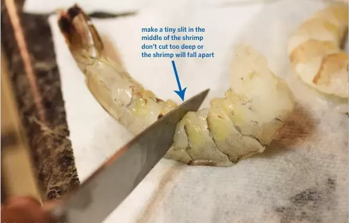
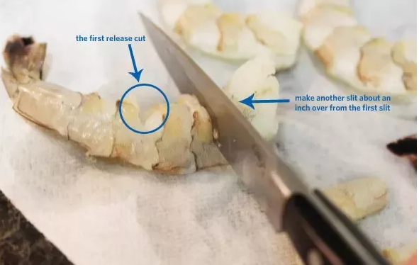

يتمتع اليابانيون بقدرة فريدة على تناول الطعام الأجنبي وتعديله
إلى الأذواق اليابانية ، مما يخلق شيئًا جديدًا تمامًا وأصليًا ،
والتيمبورا خير مثال على ذلك.
تم تقديم طريقة قلي الطعام هذه في القرن السابع عشر من قبل المبشرين البرتغاليين.
اختفى الطبق الأصلي ولكنه كان وجبة معدة للصوم ،
عندما يحظر على العديد من الطوائف المسيحية أكل اللحوم. في الحقيقة،
يأتي اسم تيمبورا من الكلمة اللاتينية (ad tempora cuaresme) ، والتي تعني
في زمن الصوم الكبير. "اليابانيون أخطأوا في هذا الأمر
اسم الطبق وسماه تيمبورا.
تم تقديم تيمبورا حول مدينة ناغازاكي الساحلية.
في ذلك الوقت ، كانت اليابان مغلقة عن بقية العالم.
كان اتصالها الوحيد من خلال التجار البرتغاليين والهولنديين والصينيين
والمبشرون في هذه المدينة الساحلية.
مكونات:
جمبري كبير مقشر ومنزوع العرق (يمكنك ترك الذيل عليه أو إزالته)
مزيج تمبورا يمكنك شرائه أو صنع خليط تمبورا الجمبري الخاص بك
ماء - لخلطة الخليط
زيت نباتي للقلي
طريقة عمل وصفة تمبورا الجمبري
قطع الجمبري. اصنع شقوقًا ضحلة في الجزء الداخلي من كل جمبري.
عادة ما أقوم بعمل 5 شقوق لكل جمبري.
فصل الجمبري مثل هذا سيمنعك
الجمبري من الشباك أثناء عملية القلي.
وتسمى هذه العملية أيضًا "بسط" الجمبري.


اخلط الخليط. اخلطي مزيج التيمبورا الجاف بالماء البارد في وعاء كبير.
جفف الروبيان بالتربيت عليه واغمسه في الخليط.
اغمس واقلي. يقلى الجمبري بالبقسماط في قدر من الزيت
على حرارة متوسطة عالية (حوالي 375 درجة فهرنهايت)
حتى يصبح لونها بنيا ذهبيا ، حوالي 2-3 دقائق
كم من الوقت تقلى الجمبري؟
أفضل طريقة لقلي أي شيء وخاصة الجمبري ،
عن طريق تسخين الزيت إلى درجة الحرارة الصحيحة.
سترغب في جعل مقياس الحرارة يقرأ 375 درجة فهرنهايت.
بمجرد أن تكون درجة الحرارة مناسبة ،
توضع في التمبورا المخفوقة وتُقلى لمدة 2-3 دقائق.
نصائح لتيمبورا الجمبري المقرمش :
استخدم الزيت المناسب- من المهم استخدام زيت بدرجة دخان عالية حتى لا يحترق.
تقليديا ، يتم قلي التيمبورا في زيت السمسم غير المكرر (غير المحمص).
ولكن إذا لم يكن لديك أي من ذلك ، فيمكنك استخدام عباد الشمس ،
خضروات ، كانولا ، أو فول سوداني لوصفة تمبورا الجمبري.
قطع الشقوق في الجمبري - عمل شقوق ضحلة في الجزء الداخلي من
كل جمبري لمنعه من التجعد أثناء عملية القلي.
هذا يجعلهم أسهل في تناول الطعام وتقديمهم في لفائف السوشي.
حافظ على درجة حرارة الزيت ثابتة - تأكد من بقاء الزيت
بين 350 و 375 درجة فهرنهايت لأن هذا سيعطي الجمبري الخاص بك تمبورا متساويًا
هشاشة ولون ذهبي. إذا أصبح الزيت باردًا جدًا ، ستحصل على روبيان رطب.
ساخن جدًا وسيتحول الخليط إلى اللون البني بينما يصبح الداخل نيئًا.

 تسجيل الدخول
تسجيل الدخول